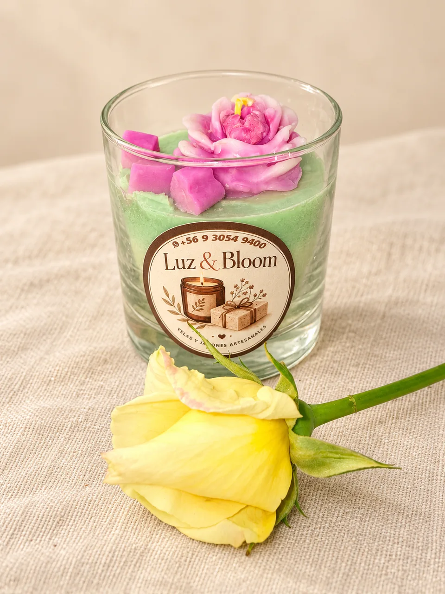
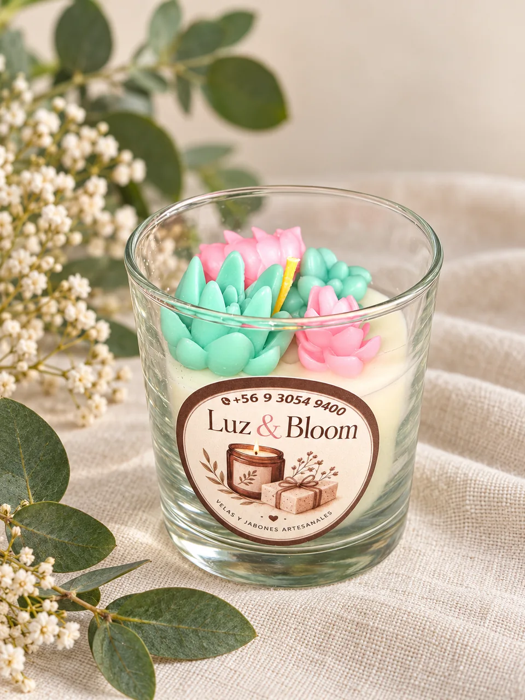
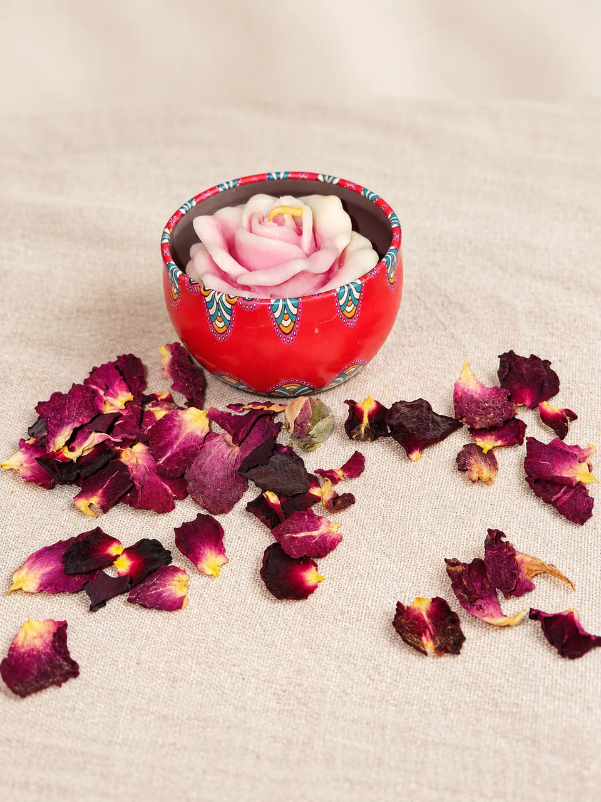
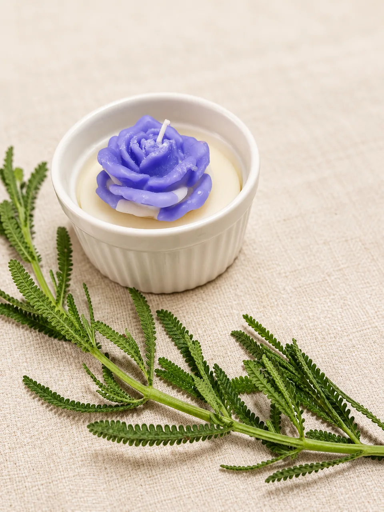
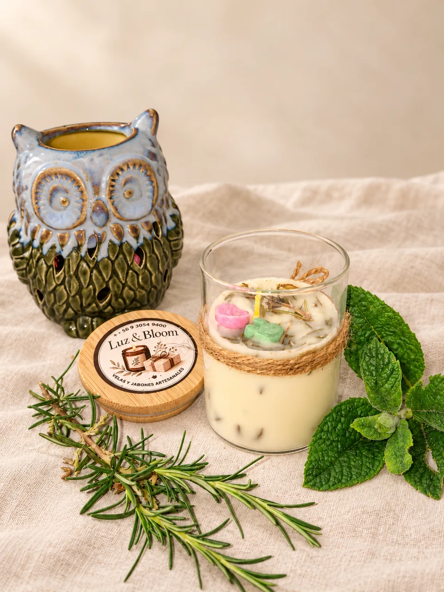
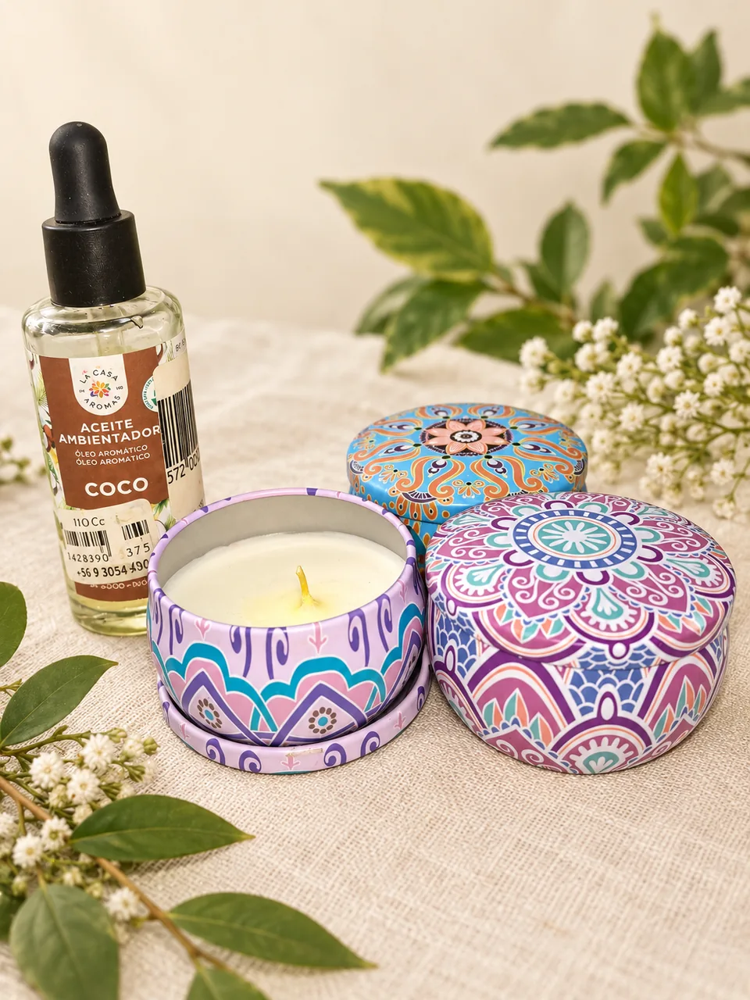

Vela de naranja y canela

La frescura de la naranja y el aroma especiado de la canela
se combinan en una vela hecha a mano. Una mezcla cálida
para perfumar tu espacio y acompañar una tarde en casa.
- Ingredientes: Hecha a base de naranja y canela.
- Aroma: Cítrico, dulce y especiado.
- Beneficios sensoriales: Perfuma el ambiente con notas frescas de naranja y un fondo cálido de canela.
- Presentación: Vaso de vidrio con decoración artesanal.
Consultar por WhatsApp
Vela de rosas

Un aroma floral y a primavera. Sus tonos verdes y rosados
le dan un aspecto de jardín en miniatura, para decorar
un rincón de tu casa o regalar.
- Ingredientes: Hecha a base de esencia de rosas.
- Aroma: Floral y dulce.
- Beneficios sensoriales: Aporta un perfume floral al ambiente y acompaña tus momentos de descanso.
- Presentación: Vaso de vidrio con flores rosadas que evoca el aroma floral y la primavera.
Consultar por WhatsApp
Vela Jardín floral

Un pequeño jardín en tonos verdes y rosados. Esta vela
combina un aroma floral con figuras de suculentas, para
quienes disfrutan de las plantas y los detalles hechos a mano.
- Ingredientes: Base de cera para velas y fragancia floral.
- Aroma: Floral.
- Beneficios sensoriales: Perfuma el espacio y suma un detalle botánico a la decoración.
- Presentación: Vaso de vidrio con figuras de cera inspiradas en suculentas.
Consultar por WhatsApp
Vela de rosas en recipiente decorado

Una rosa en un recipiente cerámico. Su aroma de rosas y sus
colores la convierten en un detalle para regalar o disfrutar
en casa.
- Ingredientes: Esencia de rosas.
- Aroma: Floral y dulce.
- Beneficios sensoriales: Aromatiza el ambiente con notas de rosas y aporta color a tus espacios.
- Presentación: Recipiente cerámico decorado con una rosa de cera hecha a mano.
Consultar por WhatsApp
Vela de lavanda

El aroma herbal de la lavanda en una presentación sencilla:
un recipiente blanco y una rosa violeta. Para perfumar ese
rincón donde te gusta leer, conversar o hacer una pausa.
- Ingredientes: Esencia de lavanda.
- Aroma: Herbal y floral.
- Beneficios sensoriales: Aporta un aroma de lavanda al espacio, como parte de tu ambiente de descanso.
- Presentación: Recipiente cerámico blanco con una rosa violeta.
Consultar por WhatsApp
Vela de menta y romero

La menta se siente primero. Después queda el aroma herbal
del romero, parecido al de una rama recién cortada.
- Ingredientes: Base de cera con aroma de menta y romero.
- Aroma: Fresco y herbal, con una nota mentolada.
- Beneficios sensoriales: Perfuma el ambiente con la frescura de la menta y el fondo herbal del romero.
- Presentación: Vela artesanal en recipiente individual.
Consultar por WhatsApp
Vela aromática de coco

Una vela de aroma dulce a coco en un envase metálico
con tapa, fácil de guardar cuando ya está fría.
- Ingredientes: Base de cera con fragancia de coco.
- Aroma: Dulce, con notas cremosas de coco.
- Beneficios sensoriales: Deja un perfume dulce a coco en el ambiente.
- Presentación: Envase metálico con tapa.
Consultar por WhatsApp